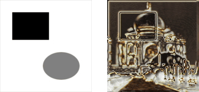
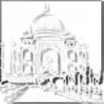
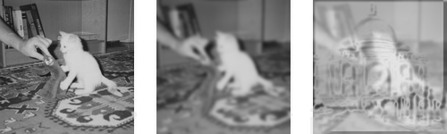
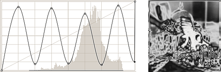
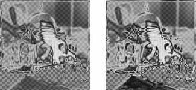
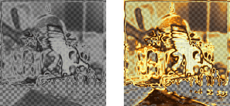

This filter provides a chrome effect. The source image must be an image containing a single layer. This layer is used as mask (“stencil”) for the chrome effect.
The filter creates a new image with the chrome effect applied to the source image or, if a selection exists, to the selection of the source image (a nice background is added too). If no environment map image is specified, a copy of the source image will be used.
- Saturação de cromo, Luminosidade de cromo
-
Use esta opção para controlar como a saturação e a luminosidade da camada “Cromar” são ajustadas. Valores negativos diminuem a saturação e a luminosidade respectivamente.
- Fator de cromo
-
Este fator permite que você ajuste deslocamentos, raio de desfocagem e tamanho do pincel usados para construir as camadas de “Cromar” e “Cor de destaque” (e também da camada de “Sombra projetada”)
Mude com cautela, diminuir este valor pode tornar o efeito de cromagem pior. O valor padrão de 0,75 parece ser uma boa escolha.
- Mapa de ambiente
-
The environment map is an image that is added as some kind of “noise” to the source. If no image is selected here, the source image will be used.
The effect is best to see if you use a simple map with some obvious shapes:

Usando um mapa de ambiente simples
The size of the environment map image doesn't matter, it is scaled to the size of the source image.
- Equilíbrio de reflexos
-
Esta cor é usada para modificar o balanço de cor da camada “Cor de destaque”: a quantidade de vermelho, verde e azul é aumentada de acordo com os valores correspondentes da cor escolhida aqui.
Evite cores com valores de vermelho, verde ou azul > 230.
- Equilíbrio de cromo
-
O mesmo que acima, mas modifica o equilíbrio de cores da camada “Cromar”.
- Cromar áreas em branco
-
Se habilitado (isso é o padrão), a imagem de origem é usada como máscara. Caso contrário, o negativo da imagem de origem será usado.
A seção seguinte prove uma descrição breve e simplificada de como o script (esse filtro é criado como um script-fu) cria o efeito de cromo.
If you apply the filter to your source images and then look at the Layers Dialog of the resulting image, you will see that there are two main layers which make up the chrome effect: the “Chrome” layer and the “Highlight” layer. These layers are created as follows:
-
O script constrói uma camada simplificada e desfocada a partir da imagem de origem (ou da imagem invertida se Cromar áreas em branco estiver desligado).

O Fator de cromo controla a aparência desta camada.
-
O mapa de ambiente (redimensionado) é desfocado e mesclado com a imagem acima, com opacidade de 50%. (Você consegue ver o gato no exemplo da introdução?)

Mesclando o mapa de ambiente
-
O brilho (valor) da camada é baseado de acordo com uma curva spline de intensidades.

Modificando a curva de intensidade
-
Uma máscara de camada é adicionada, e inicializada com a imagem de origem (o “Estêncil de cromagem”). Essa é a camada “Cromar ”antes do passo final.
A camada “Cor de destaque” é uma cópia da camada “Cromar” onde a máscara de camada é contornada com um pincel branco.

Base para Cromar e Cor de destaque
-
Para ambas as camadas, o balanço de cor é modificado (de acordo com o Equilíbrio de reflexo e o Equilíbrio de cromo), aumentando a quantidade de vermelho, verde e azul com ênfase nas partes claras.
Adicionalmente, a saturação e a luminosidade da camada “Cromar” são modificados (controlados pelos ajustes Saturação do cromo e Luminosidade do cromo).

Camadas Cromar e Cor de destaque
Agora, adicione uma sombra projetada e uma camada de fundo, e você obterá a Imagem de exemplo para o filtro “Estêncil de cromagem”.